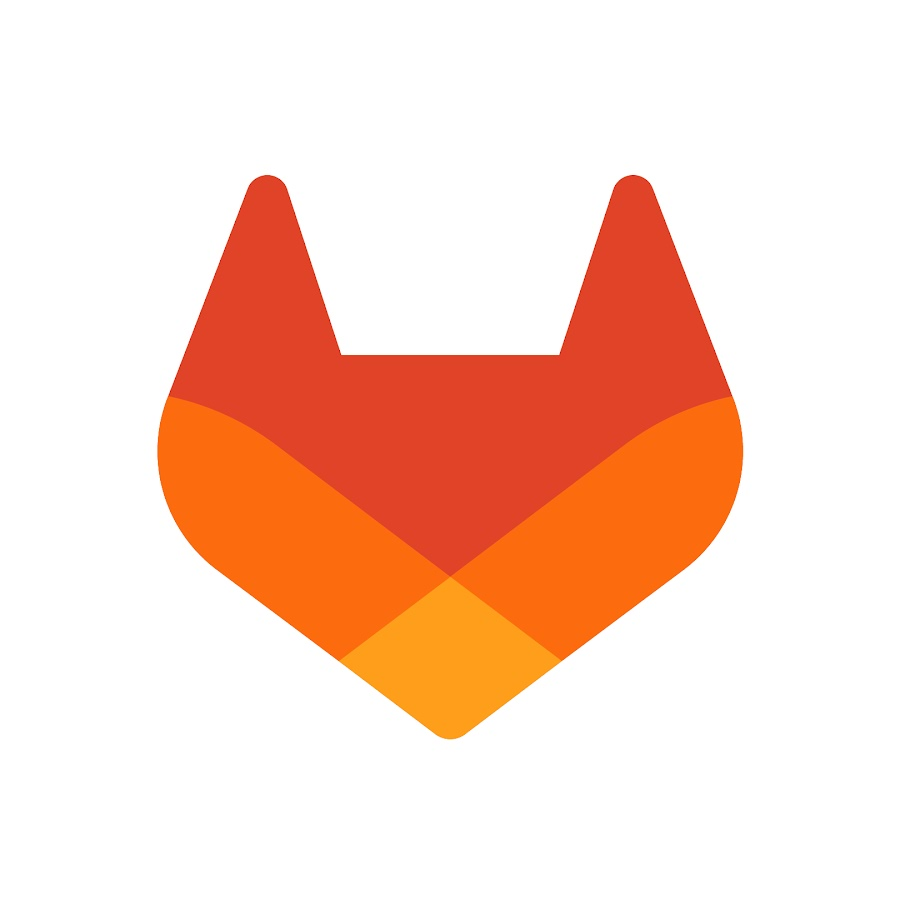

H4rm0ny Content Hub
> Initializing operator session...
0
WRITEUPS
0
BLOG POSTS
0
SECTIONS
> Profile | Hacking is an art.
// OFFENSIVE WRITEUPS
Box Writeups
NotificationX
MEDIUMExploiting an unauthenticated SQL Injection in the NotificationX WordPress plugin to extract admin credentials and achieve RCE.
On-Premise-03
EASYExploiting Laravel debug mode to achieve Remote Code Execution via CVE-2021-3129.
Pterodactyl
MEDIUMFull lab walkthrough from recon to root with exploit chain and practical troubleshooting notes.

SSRF in GitLab
MEDIUMExploiting a Server-Side Request Forgery (SSRF) in GitLab's "Import From URL" feature to probe internal networks and perform port scanning via timing differences.
shiro
MEDIUMNo writeups match this filter.